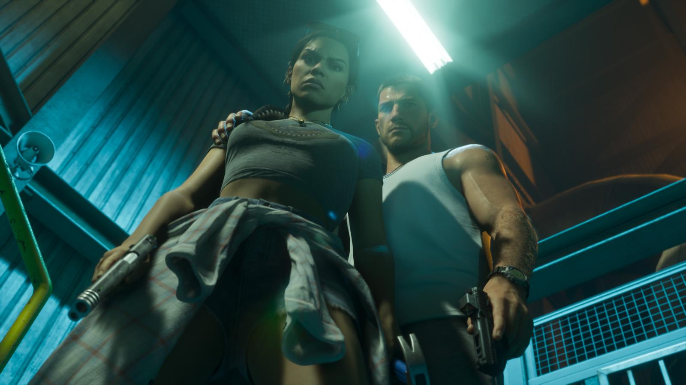
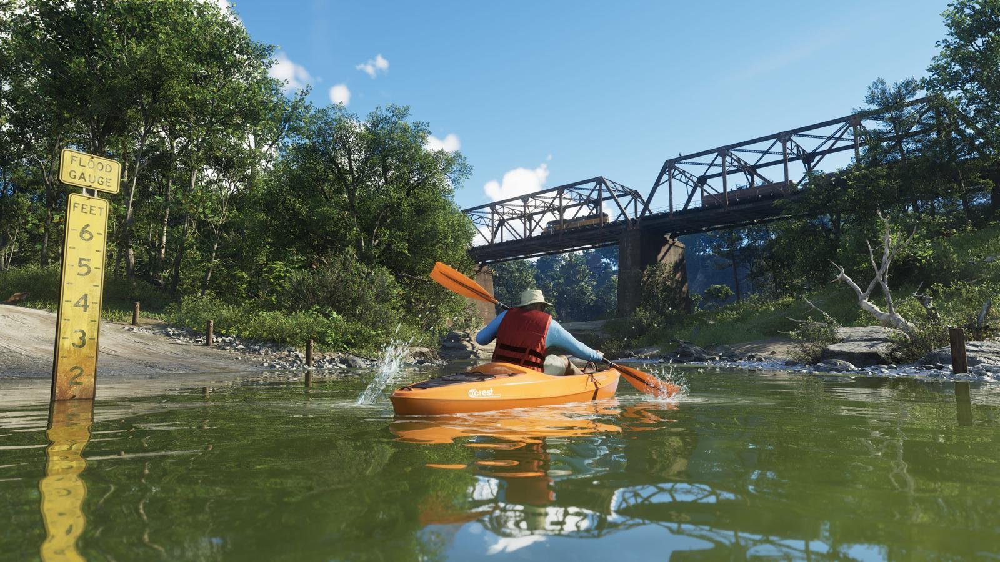

Новые механики GTA 6: что изменилось
Обновлено: 24.09.2026

- Переключаться между Джейсоном и Лусией можно в любой момент.
- Розыск появляется, только если преступление кто-то увидел.
- Тело героя меняется от еды и тренировок.
- У машин есть топливо, любой магазин можно ограбить.
Ниже — механики, которые Rockstar показала официально и которые описали журналисты после знакомства с игрой. Всё непроверенное мы не публикуем.
Два героя
Между Джейсоном и Лусией можно переключаться в любой момент — и в открытом мире, и в сюжетных миссиях. От выборов игрока зависит развитие их отношений.

Розыск и криминальный профиль
- Уровень розыска появляется, только если преступление видели свидетели или камеры.
- Полиция учитывает, что о вас знает: приметы, оружие, машину.
- Криминальный профиль запоминает, как вы действуете — аккуратно или жестоко, и на это реагируют персонажи.
Тело и спортзал
Внешность героя меняется от питания и тренировок. Спортзал — необязательный, в нём мини-игры на кнопки контроллера; тренировки повышают здоровье и выносливость. Одежды — тысячи вариантов, и прохожие реагируют на внешний вид.
Мир и занятия
- Ограбить можно любой магазин — тихо, со взломом или со взрывчаткой.
- Угон учитывает уровень защиты машины, у транспорта есть топливо.
- Занятия: бильярд, мини-гольф, баскетбол, каяк, дайвинг, рыбалка, охота, гонки по бездорожью.
- Животных можно изучать, собак — гладить и кормить.
- Огромное количество доступных интерьеров.
- Можно ездить на такси, автобусах и поезде.

Телефон
В телефоне героев — соцсети, банк, фитнес-приложение, вызов такси и фото-режим.
Источники: Rockstar Games — официальный сайт GTA VI (rockstargames.com/VI), Rockstar Newswire; превью журналистов и официальный геймплейный ролик Rockstar (по данным GTABase, VICE).